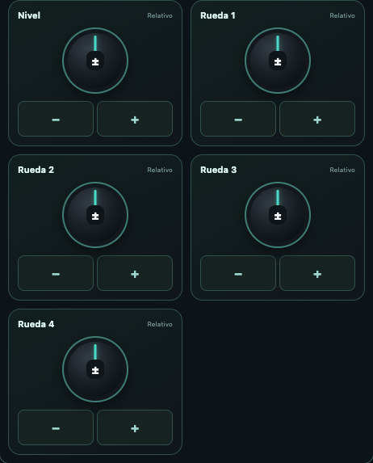

Configurar la conexión OSC
- Conecta el dispositivo y la mesa o receptor a una red accesible y permite el acceso a la red local.
- En Conexión → Básico, elige o crea un perfil, selecciona OSC y elige el Perfil de mesa.
- Introduce la IP del receptor. En Avanzado, comprueba el puerto OSC del receptor y las opciones del perfil.
- Para Eos o LT, revisa el Puerto de recepción en la app y configura el envío de la mesa a la IP del dispositivo y ese puerto.
- Prueba una orden sobre un canal conocido y verifica el resultado en la mesa. Comprueba también la lectura de datos si el perfil dispone de retorno.
El envío UDP puede completarse sin confirmar la ejecución de la orden. Revisa las opciones del perfil activo antes de operar.

Perfil ETC Eos
Habilita recepción y transmisión OSC en Eos. En Conexión despliega Configurar la mesa y comprueba los puertos en ambos sentidos. En Lectura de parámetros puedes elegir Automática, UDP o TCP. Para TCP, el puerto y el formato de trama deben coincidir con la mesa. El puerto 3037 de Third Party OSC utiliza SLIP.
Canal y grupos
Utiliza el teclado del perfil Eos para preparar la selección y el nivel y confirma la orden con Enter. Los grupos rápidos aplican los tiempos mediante Sneak. Grand Master actúa sobre el maestro global de Eos. Clear All libera valores manuales y los playbacks pueden seguir dando salida.
Fixtures y Patch
En Fixtures selecciona el canal y espera su lectura antes de ajustar los parámetros disponibles. Si faltan datos, revisa el retorno OSC y la lectura UDP o TCP. En Patch, consulta los datos de la mesa y comprueba canal, parte y dirección antes de confirmar una edición en Eos.

Faders
Las tiras controlan los submasters 1–20. Comprueba el número y la etiqueta antes de mover un fader. Mantén y suelta el pulsador para una acción momentánea según el comportamiento del submaster.
CUE y Direct Selects
En CUE introduce el número de lista y carga sus cues. Pulsa Actualizar tras cambiar la lista en la mesa. Toca una fila para elegir el destino y comprueba su número antes de ejecutar el salto. Go avanza el playback, Back retrocede y Out envía Go to Cue Out.
En DS elige el tipo de Direct Select, cambia de página y espera a que lleguen los botones de la mesa. Toca una casilla ocupada para ejecutar su selección.

Perfil grandMA3
Este perfil permite usar el teclado de comandos, controlar atributos en Fixtures y manejar 20 ejecutores. El plugin opcional LXSelection permite consultar los aparatos seleccionados en la mesa y los atributos que reconoce esta consulta.
Conectar la app y la mesa
- Conecta el móvil y la mesa o el ordenador con grandMA3 onPC a una red accesible entre ambos.
- En Pro L abre Conexión → Básico, crea o elige un perfil, selecciona OSC y el perfil grandMA3. Escribe la IP de la mesa o del ordenador.
- En Conexión → Avanzado → Puerto OSC del receptor, indica el puerto UDP de entrada de grandMA3. El perfil propone 8000.
- En grandMA3 abre Menu → In & Out → OSC, selecciona la interfaz de red correcta y activa Enable Input. En la línea de entrada elige UDP, el mismo puerto de la app, Receive y Receive Command.
- Si la línea tiene prefijo, cópialo en Prefijo OSC de la mesa (sin barras) en Pro L. Comprueba la selección y envía una orden de prueba sobre un fixture conocido.
Las opciones de entrada, salida, interfaz, prefijo y puerto se configuran en el menú OSC de grandMA3. Consulta la documentación de la versión de mesa que utilizas. Manual oficial de OSC de grandMA3.
Usar el teclado
En Canal, las teclas de objetos y programación preparan la orden que muestra ORDEN ACTUAL. Por ejemplo, pulsa Fixture → 1 → At → 5 → 0 → Please para solicitar el 50 % del fixture 1. Please envía el borrador a la mesa.
Clear, Next, Prev y las teclas de modo ejecutan su acción directamente. Full y Zero envían el nivel correspondiente. Esc borra el borrador de la app. MA aplica el atajo a la siguiente tecla. En Más puedes editar la orden y acceder a otras funciones.
Los botones inferiores Go−, Pause y Go+ actúan sobre el ejecutor seleccionado en la mesa. Comprueba el efecto y los modos activos en grandMA3 antes de continuar.

Controlar Fixtures
- Abre Fixtures y elige Selección de la mesa / teclado, Fixtures manuales o Grupo de la mesa. La primera opción actúa sobre la selección vigente en grandMA3. En manual escribe los Fixture IDs, por ejemplo
1 + 3 Thru 8; para un grupo introduce su número. - Ajusta Intensidad con su encoder. Para Posición, arrastra la cuadrícula XY o ajusta los ejes. Centrar aparato solicita Pan y Tilt al 50 %.
- En Color, selecciona el Color Readout de la mesa que usa tu usuario, RGB o CMY, antes de usar el picker o los emisores. La app envía los atributos
ColorRGB_R,ColorRGB_GyColorRGB_Bcon la conversión correspondiente. - Para otros parámetros abre Otros atributos, escribe su nombre exacto, por ejemplo
Zoom,FocusoIris, y pulsa Añadir control. El aparato debe disponer de ese atributo en el show.
Los porcentajes de estos controles muestran los valores solicitados desde Pro L. La lectura opcional de LXSelection devuelve la selección y una lista de atributos reconocidos. Para comprobar los valores actuales de los parámetros, consulta la mesa. Al cambiar el tipo de selección se reinician los valores locales mostrados.
Instalar el plugin opcional LXSelection
Necesitas una versión de Pro L que muestre Consultar selección con plugin opcional dentro de Fixtures. La instalación se realiza en la mesa o en grandMA3 onPC.
Descargar LXSelection (.zip) · Abrir la guía de instalación.
- Descomprime el ZIP y conserva juntos
LXSelection.xmlyLXSelection.lua. - Cópialos en
gma3_library/datapools/pluginsde la instalación, o engrandMA3/gma3_library/datapools/pluginsde una memoria USB. - En el pool Plugins del DataPool activo, abre el menú de importación de una casilla libre, selecciona la unidad y el archivo
LXSelection.xmle impórtalo. - Conserva el nombre exacto LXSelection. Revisa que su componente Lua se haya cargado y guarda el show.
También puedes crear un plugin llamado LXSelection y pegar el contenido de LXSelection.lua en su primer componente Lua. El funcionamiento del pool y del editor se describe en la documentación oficial. Manual oficial de plugins de grandMA3.
Configurar el retorno del plugin
- En grandMA3, dentro de In & Out → OSC, activa Enable Output.
- Crea o configura una línea UDP de salida dirigida a la IP del móvil. Activa Send y deja vacío el prefijo de esa línea.
- Configura su puerto con el puerto de escucha del perfil de Pro L. Un perfil nuevo utiliza 8001. Para seguir el ejemplo siguiente, crea un perfil nuevo; los perfiles reutilizados conservan su puerto de escucha anterior.
- Abre el componente Lua de LXSelection y comprueba
local outputLine = 1. Ese número debe ser el de la línea OSC que apunta al móvil. Si utilizas otra línea, cambia el número y guarda el componente y el show.
| Sentido del ejemplo | Destino | Puerto UDP |
|---|---|---|
| Pro L → grandMA3 | IP de la mesa u onPC | 8000 |
| grandMA3 → Pro L | IP del móvil | 8001 en un perfil nuevo |
El puerto de entrada de grandMA3 y el puerto de retorno son ajustes independientes. outputLine identifica una línea de la tabla OSC. Conserva en la línea de retorno el prefijo vacío que requiere la respuesta de LXSelection.
Leer e interpretar la selección
- Selecciona los aparatos en grandMA3, o prepara su selección desde el teclado de Pro L.
- En Pro L abre Fixtures → Selección de la mesa / teclado.
- Despliega Consultar selección con plugin opcional y pulsa Leer selección de la mesa.
- Espera la respuesta y consulta cada fila. Repite la lectura después de cambiar la selección en la mesa.
La respuesta muestra el Fixture ID cuando existe, el índice de patch interno y los atributos reconocidos entre Dimmer, Pan, Tilt, ColorRGB_R, ColorRGB_G, ColorRGB_B, Zoom, Focus e Iris. El índice ayuda a distinguir subfixtures que comparten FID. La consulta contempla hasta 32 elementos; si la selección es mayor aparece Primeros 32 elementos de la selección. Una selección sin elementos devuelve Selección vacía. Una fila sin coincidencias puede corresponder a un aparato con otros atributos.
La lectura es una instantánea solicitada con el botón. El plugin consulta la selección y los atributos disponibles mediante la API de grandMA3. El control de niveles sigue realizándose al operar los controles de la app.

Configurar los 20 ejecutores
En Conexión → Avanzado, ajusta Página de ejecutores y Primer ejecutor de los 20 faders. Por ejemplo, página 1 y primer ejecutor 201 corresponden a los ejecutores 201–220 de esa página.
En la línea OSC de grandMA3, configura Page, Fader y Key como nombres de dirección y FaderRange 100. En Pro L abre Faders, identifica el ejecutor y mueve su tira. El pulsador envía la pulsación y su liberación al Key correspondiente. El comportamiento depende de lo asignado al ejecutor en el show.
Resolver problemas de grandMA3
- Las órdenes no actúan en la mesa.
- Comprueba IP, interfaz, UDP, puerto, prefijo, Enable Input, Receive y Receive Command. Verifica el Fixture ID y la orden mostrada antes de pulsar Please.
- Las órdenes funcionan y la consulta indica “Sin respuesta del plugin”.
- Revisa el nombre LXSelection en el DataPool activo, su componente Lua, Enable Output, Send, la IP del móvil, el puerto de retorno y outputLine. Comprueba el prefijo vacío de la línea de salida.
- La selección leída corresponde a una consulta anterior.
- Pulsa otra vez Leer selección de la mesa tras cambiar la selección. La marca horaria identifica la lectura recibida.
- Aparecen únicamente 32 elementos.
- Reduce la selección y consulta por partes para revisar los demás aparatos.
- Los atributos aparecen y los porcentajes difieren de la mesa.
- La consulta devuelve nombres de atributos reconocidos. Los porcentajes visibles en los controles son los solicitados desde la app.
- El color o un parámetro no responde como esperas.
- Comprueba Color Readout RGB/CMY en tu usuario, el nombre exacto del atributo y su disponibilidad en los fixtures seleccionados.
El perfil y esta primera versión del plugin siguen pendientes de validación completa en consola física.
Perfil LT
En la mesa activa MULTIMEDIA → OSC. Comprueba las direcciones de fábrica o adapta las asignaciones desde Conexión en Pro L. La entrada de mesa propuesta es 8000 y el retorno hacia la IP del móvil utiliza 9000. Pulsa Sincronizar para solicitar las etiquetas y los estados que envía la mesa.
Teclado y selección
En Canal utiliza Channel o Fixture para seleccionar el objeto y confirma las órdenes con OK. Después de Channel, Fixture o @, el teclado muestra la ayuda de . para repetir la última selección o nivel correspondiente. Siguiente recorre la selección y Test en escena ejecuta la prueba de luz de la mesa. También están disponibles Rel, Reset, Home, Seq, QList y Live.T.
Fixtures y ruedas relativas
Abre Fixtures y pulsa Sincronizar. La vista muestra una rueda de Nivel y cuatro ruedas cuyos nombres proceden de LT. Desliza una rueda arriba o abajo o pulsa − y + para mover un paso. La función depende de la selección y de la asignación que tenga la mesa. El retorno comunica etiquetas y estados; el ajuste de las ruedas es relativo.

CUE y faders A/B
En CUE consulta la etiqueta de reproducción B y utiliza Go, Pause o Back. Para ir a una cue concreta, introduce su número y pulsa Go to Cue. Los faders A · control local y B · control local envían durante el recorrido y al soltar, con la escala OSC 0–255. Comprueba el resultado en la mesa.
Submasters y grupos rápidos
Los 20 faders corresponden a S1–S20 y sus pulsadores a E1–E20 según el modo Flash de LT. En Estado de submasters puedes consultar las etiquetas y los LEDs recibidos y usar Ejecutar o Seleccionar. Para grupos rápidos, configura entrada y salida a cero y controla los tiempos con Live.T en LT.
Retorno y recuperación
La app comprueba periódicamente el retorno y vuelve a solicitar SYNC si lo pierde. Observa los mensajes Retorno LT activo, Recuperando retorno LT… o Sin retorno actual de LT · comprueba OSC y Wi-Fi. Pulsa Sincronizar tras revisar la red y el envío de la mesa. La vista ofrece las etiquetas y los LEDs comunicados por LT; la consulta de una lista completa de cues, tiempos y patch queda fuera de este retorno.
Perfil OSC genérico
Define el prefijo y la escala que espera tu receptor. Por ejemplo, con el prefijo /lx y escala 0–100, asigna /lx/channel/1/level al primer canal del receptor. En escala 0–1, media intensidad equivale a 0,5. Para otras funciones abre Mensaje OSC personalizado, escribe la dirección, añade en orden los argumentos enteros, decimales, de texto o booleanos que pide el receptor y envía.
Canales, grupos y faders
Configura en el receptor las direcciones que emite Pro L. Con el prefijo /lx, los canales utilizan /lx/channel/N/level, el maestro /lx/master, los submasters /lx/sub/N y los grupos /lx/group/N. La escala debe coincidir con la del receptor.
Patch y biblioteca
En 1:1 cada canal controla una dirección. Consulta Direccionamiento para ver la correspondencia con los universos activos. Cambiar a 1:1 conserva el Patch personalizado.
- En Personalizado → Mi biblioteca LX, importa tu GDTF desde Importar GDTF o fixture local. En las versiones que muestran GDTF Share puedes consultar su catálogo, seleccionar marca y modelo e importar una revisión.
- Revisa la declaración de uso y pulsa Importar y revisar. La personalidad queda guardada en la biblioteca local.
- Cierra la biblioteca y abre Buscar y añadir aparato. Escribe marca y modelo, despliega el modelo y toca su modo.
- Completa canal inicial, cantidad, universo y dirección. Para varios aparatos revisa los pasos de canal y DMX y la vista previa. Pulsa Guardar.
Marca la estrella de tus modos habituales y usa ★ Solo favoritos para encontrarlos antes. La organización sigue marca → modelo → modo.
Abrir la guía completa de GDTF, Patch y búsqueda rápida · Crear una personalidad desde un modo GDTF.
En OSC genérico, comprueba en el receptor la correspondencia entre los canales recibidos y sus funciones.
Resolver problemas de OSC
- El envío OSC aparece preparado, pero la mesa no cambia.
- Comprueba la IP de destino, que el puerto coincida con la entrada de la mesa y que la recepción esté habilitada. En genérico revisa también dirección y escala. UDP permite enviar sin confirmar la ejecución.
- Eos responde a las teclas pero no muestra cues o parámetros.
- Verifica por separado el retorno de la mesa y el puerto local. En TCP revisa el formato SLIP o Packet Length. Después vuelve a cargar la lista o selecciona otra vez el canal.
Las pestañas disponibles dependen del perfil OSC. Revisa el perfil activo si falta una vista. Las operaciones de cada mesa dependen de su configuración y versión.